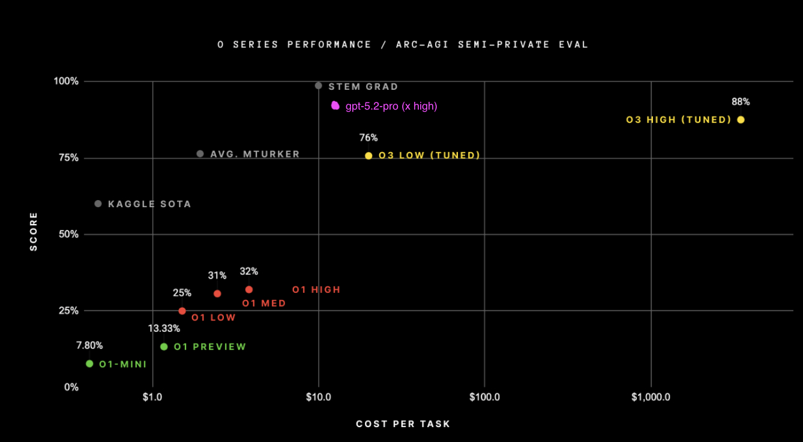
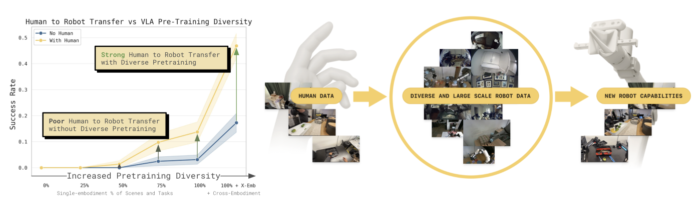
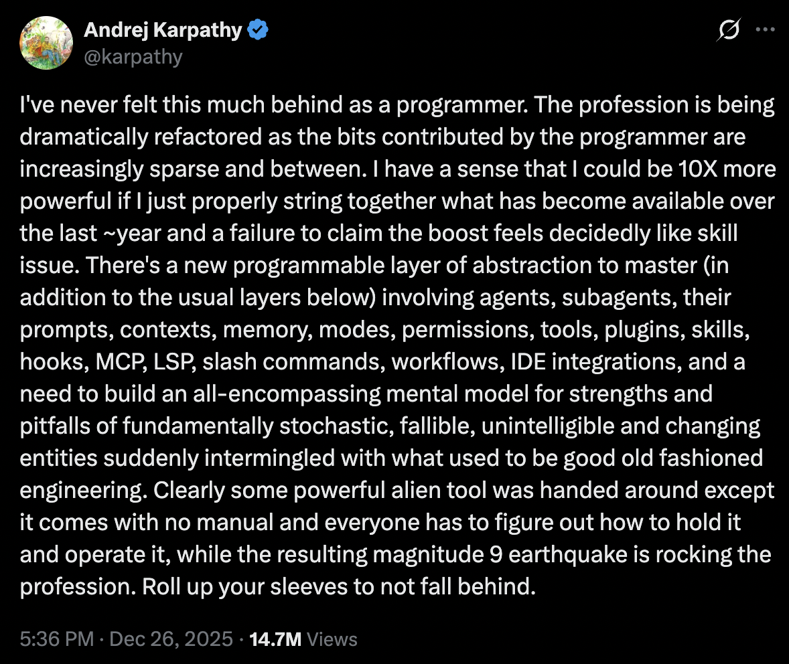

I used to try and make predictions for what was going to happen in the coming year. I no longer try to do this for a couple of reasons. First, things have been evolving at a rapid pace, not only technologically but also economically. When incentives and developments co-evolve quickly like this, it becomes difficult to clearly envision how exactly the future rolls out. This is the smaller bit. You could also call this a skill issue; I am okay with this characterization. The second, more prominent reason is that it makes me root for or against events as they unfold. One of the last things I want to see on my timeline is someone talk about how they got a prediction for a negative event right. Perhaps worse than this is reading a post from someone celebrating advances they predicted as if they were the ones making them happen. So, instead of predicting what will happen, here's a list of areas of development I'm interested in following.
I recently wrote an essay on Digital Worlds and why I think they will be crucial on the path for us to deploy physical agents in constrained environments. In 2026, I'm particularly interested in scaling laws for such models with regard to both quality and price efficiency. Right now, most of these models are really large and expensive to run inference on. If we want to use them as simulators to train RL agents in, we need to be able to step through the environment really fast and inexpensively without compromising on quality (and, in fact, improving quality at lower prices).
If language models are any indication of how market forces (and technological development) can push for model efficiency, we are in for a treat in this space over the next couple of years. In 12 months, we went from having a model like o3 that can do really well on the ARC-AGI benchmark at an insanely expensive price point to GPT-5.2, which not only outperforms o3 on this benchmark but does so at 0.25% of the cost. If we expect to see intelligence/price improvements at even a fraction of this pace, I think we will end 2026 with models like SIMA-2 that are increasingly trained in environments generated by world models. I think this is extremely exciting.

GPT-5.2's result on ARC-AGI-1 at a fraction of o3's cost, 1 year later. Source: ARC Prize (with gpt-5.2's result scribbled onto it by me)
A minor aside on world modeling as a simulation technique: I've been seeing a lot of criticism on X talking about whether world-model-type simulators make any sense if the amount of data required to train them is equivalent to the amount of data required to run behavior cloning to train agents themselves. I think this is a fair question to be asking, but I still maintain my position that world models are crucial.
First, we have a ton of internet-scale data from embodied agents without any action information (which we can still learn to approximate, as shown in Genie). If we can train gigantic foundation models that utilize this data, we can amortize the cost of training agents over the additional data required to generalize to their specific domain environments.
Second, I think this is somewhat similar to the debate about using reinforcement learning in language models: a lot of studies show that pass@k on base models can yield similar results to RL-trained models, but the key point is that RL reshapes the distribution so the model makes the right moves without needing to sample k times. Similarly, instead of needing to observe the correct "actions" X times in the real world, we can observe them a fraction of the time and use the simulator to generate additional experience that reinforces those behaviors, effectively trading expensive real-world interaction for cheaper simulated rollouts.
The context window of a language model is the number of tokens (chunks of characters) a model can process at once. The GPT-3.5 model that powered the launch of ChatGPT had a context window of 4,096 tokens, while newer (non-reasoning*) frontier models now operate at around the million-token scale. For example, OpenAI's GPT-4.1 supports up to 1,000,000 tokens of context, and Anthropic's Claude Sonnet 4 also supports up to 1,000,000 tokens of context. This is a 250x increase in 3 years. To make these numbers feel less abstract, OpenAI's own rule of thumb is that 1 token is about 0.75 words in English, so 4,096 tokens is about 3,000 words. That is roughly a single Harry Potter chapter. 1,000,000 tokens is about 750,000 words, which is in the same ballpark as holding the entire series in the context window at once.
The reason I'm excited for orders-of-magnitude increments to this is because: 1) it allows for models to have longer reasoning chains, 2) it will allow for greater multimodality, allowing for us to unify advancements across spacetime models, audio models, and language models by packing in an increasing number of diverse tokens into context, but more importantly 3) I have the intuition that in-context learning within extremely large context windows will be one of the biggest prerequisites to "continual learning"
Continual learning is the biggest buzz term in the LLM space since "reasoning," since it represents one of the biggest limitations that current models have: a lack of memory. Every time you open up a new ChatGPT window, it's like speaking to a new model. They have some memory features that allow the model to search through your chat history to "remember" things, but this doesn't really feel like a continuous process. My intuition for why continual learning is a function of context window size is simple: we know that in-context learning is highly data efficient (several orders of magnitude more efficient than training). I.e., if I tell a model something during my chat with it, it learns to leverage that new knowledge pretty quickly and efficiently within the same chat window. This is very different from training, where thousands of examples of a concept are required to distill it within the model's parameters.
There are several other approaches to solving this problem, but I think the most elegant one will be the least handcrafted and complex one. An effectively unbounded context window paired with a minimal retrieval-and-compression layer feels like the cleanest path toward something continual-learning-like. We'll still need some interim scaffolding to manage salience and scale, but longer contexts should reduce how clever that scaffolding has to be. Some folks from Google DeepMind and Anthropic seem to share this intuition with me.
This one is close to my heart and very relevant to the work I do. When I first came across the idea of training a self-driving agent end to end, the same way we trained an image classifier in ~2019, it seemed like one of those simple-but-elegant, no-brainer ideas that made me wonder why I hadn't thought of this myself. At the time, very few people thought this was a good idea. Those who did (George Hotz, founder of Comma, and Alex Kendall, co-founder of Wayve, where I now work) seemed to think that it was the only solution to solving the long tail.
What was then a contrarian idea is now seemingly the consensus long-term solution, with Tesla rewriting their entire driving stack to an end-to-end system in 2023 and Waymo increasingly publishing work in this area. This design/training regime has now extended beyond self-driving to all sorts of robotics applications, with companies like Physical Intelligence, 1X, Dyna Robotics, NVIDIA, and countless others putting their eggs in this basket. This is a good thing, because it is the right philosophy to solve the intelligence problem central to embodied agents.
However, with this come some challenges. These models are stochastic, hard-to-interpret black boxes. Therefore, validating such systems and making safety cases for them is a novel challenge that is yet to be solved. I often see this problem extended to the limit, with vocal (they're always so vocal) critics claiming it to be intractable and therefore a dead end. I don't believe this to be the case, but it is definitely one that we don't have a consensus solution for.
I spoke to a safety engineer a few years ago who found it hard to wrap his head around statistical analyses for safety rather than structural ones. The analogy he drew to me was, "If I was going to say that a building is safe to live in, I would like to have mechanical and structural guarantees that it was safe. I wouldn't be able to make a safety case by saying the building hasn't fallen for 100 years and therefore will not fall." I completely agree with this statement, but I do think that there is signal to be drawn from the 100 years of structural integrity.
I have a few ideas on how I think we build towards solving these problems, but I will keep them for the workplace. How would you solve this problem?
One of the most interesting and important aspects of developing learned robot agents is figuring out the data mix used to train a policy. At the beginning of 2025, there was one predominant type of data collection method: teleoperation. Robotics companies hired teleoperators to perform tasks with the robot hardware using controllers (which have taken many different forms, from PlayStation controllers to VR controllers), and then used this training data with the intention to clone this behavior via a learned robot policy. Now, close to the end of the year, a few new types of data sources have emerged. Synthetic data is data generated via the kinds of techniques discussed in all of my world-model-related rants (above in this essay, and in this essay). Egocentric data is essentially videos of humans performing tasks that we want the robot to be able to perform. By itself, egocentric data is not very helpful, since the hardware (the human body) is quite different from robot hardware. However, we're starting to see that with clever sensor setups and intelligent selection of what parts of the training process this kind of data is used in, it can demonstrably boost model performance.

Human-to-robot transfer as an emergent property of diverse pretraining. Source: Physical Intelligence
I think all of these forms of data are extremely complementary and will be part of the recipe that produces economically valuable robot policies. I'm super excited to see how these (and potentially more!) different forms of data collection play together.
2025 packed in a ton in 12 months. At the start of the year, the AI bubble was going to pop and US capital markets took a fall after DeepSeek released and open sourced R1. After the GPT 5 release, critics declared the wall had been hit and the bubble was just about to pop. Andrej Karpathy, Rich Sutton, Ilya Sutskever, and other legendary AI researchers came out and said that the current paradigm produces slop and that we have to look elsewhere for AGI. Later, Anthropic released Opus 4.5, OpenAI released GPT-5.2(+codex variants) and Google released Gemini 3 Pro. All of these models destroyed benchmarks, and to me Codex + Claude Code feel like really senior programming colleagues. Just a few days before the new year, Karpathy tweeted that he's "never felt this much behind as a programmer" and that "Clearly some powerful alien tool was handed around except it comes with no manual and everyone has to figure out how to hold it and operate it, while the resulting magnitude 9 earthquake is rocking the profession", very strongly contradicting his prior claim about these models producing slop.

Karpathy's reflection on the seismic shift in programming
I expect every year from here on out to pack in increasing amounts of advancement and excitement. What a time to be alive!
*I mention non-reasoning models here because we do not actually know the full length of internal reasoning chains for some frontier systems, so the effective "total" context plus hidden reasoning budget is not always clear.